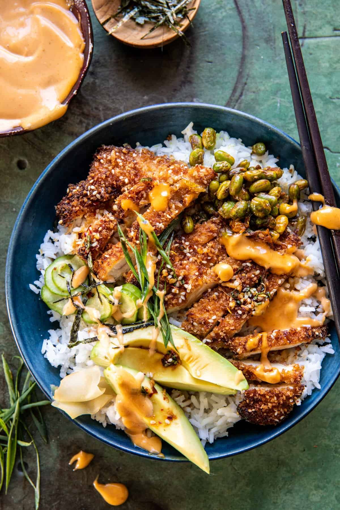

Crispy Chicken Katsu Bowls

About the recipe
Homemade Crispy Chicken Katsu Bowls with spicy gingery chicken, steamed
rice, all the best toppings, and our favorite spicy, sweet, and creamy
mayo sauce. I top each bowl off with fresh avocado, pan-fried edamame, and
a generous side of creamy mayo. Each bowl is colorful and full of flavor.
A great family dinner any night of the week.
Ingredients
- 2/3 cup, plus 2 tablespoons tamari or soy sauce
- 1 tablespoon toasted sesame oil
- 1 tablespoon honey
- 2 teaspoons grated ginger
- 2 tablespoons chopped green onions
- 1 teaspoon, plus 3 tablespoons sesame seeds
-
4 chicken cutlets, or 2 boneless chicken breasts, sliced in half
horizontally
- 1 cup Panko
- chili flakes
- 1 bag frozen shelled edamame
- 3-4 cups rice, cooked
- cucumber, avocado, pickled ginger, and nori sheets – for serving
Spicy Mayo
- 1/3 cup olive oil mayo
- 1 to 2 tablespoons sriracha
- 2 teaspoons soy sauce or tamari
- 1 teaspoon honey
Method
-
In a medium bowl, combine 2/3 cup tamari/soy sauce, sesame oil, honey,
ginger, green onion, 1 teaspoon sesame seeds, and chili flakes.
-
Place the chicken in a bowl and pour over 3-4 tablespoons of the sauce,
save the rest for serving. Let the chicken sit 10 minutes.
-
Place the Panko and 3 tablespoons sesame seeds in a shallow bowl. Dredge
both sides of the chicken through the Panko, pressing to adhere by using
your fist to pound the crumbs in. Place the chicken on a plate.
-
Heat a few tablespoons of oil in a large skillet over medium-high. Add
the chicken and cook until golden brown, 3-4 minutes. Flip the chicken
and cook until golden brown on the other side, about 3-4 minutes.
Transfer to a cutting board.
-
Add the edamame to the skillet, cook until thawed, then add 2
tablespoons tamari/soy sauce. Cook another minute, then remove from the
heat.
- To make the Spicy Mayo, combine all ingredients in a small bowl.
-
To assemble, slice the chicken into thin strips. Add the rice to bowls,
top with cucumber, avocado, chicken, pickled ginger, green onions, and
nori. Spoon over the spicy mayo and the reserved tamari/soy sauce.
Back to index
Original recipe can be found
here, it's not actually mine.